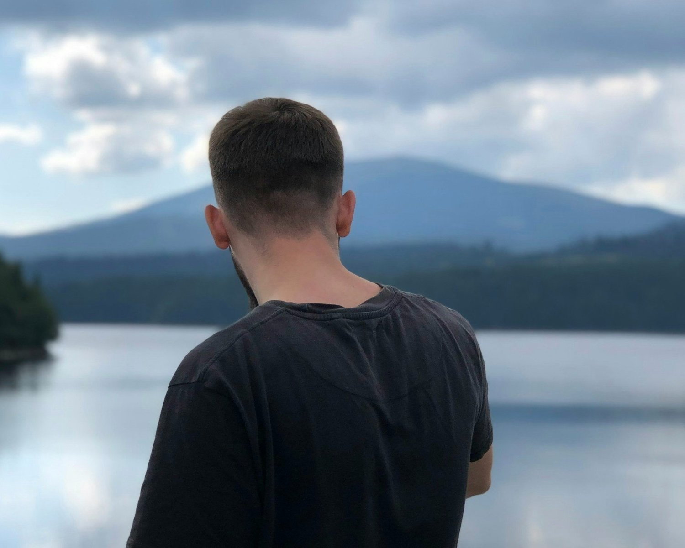

Can AI Be Spiritual?
There has been a lot of talk lately about AI and how it's going to replace jobs, rewrite the truth, or even make human connection obsolete.
Read BlogBlog topic
Browse the latest Healer Next Door blogs in this topic.
Browse
Blog
There has been a lot of talk lately about AI and how it's going to replace jobs, rewrite the truth, or even make human connection obsolete.
Read BlogWe often talk about energy, mindfulness, and the deeper work of healing.
Read Blog
Healing & Spiritual Growth“When I let go of what I am, I become what I might be.” — Lao Tzu
Read BlogYou say you’re doing fine.
Read BlogHave you ever walked into a room and felt this invisible vibe in the air?
Read BlogYesterday, I celebrated my 60th birthday!
Read BlogI believe in manifestation.
Read BlogBeing a healer doesn’t mean you have to have all the answers.
Read BlogWhat’s the best way to navigate life in a world full of uncertainty?
Read Blog Healing & Spiritual Growth
Healing & Spiritual GrowthFor years, I ignored the tightness in my chest every time I thought about certain people, certain moments.
Read Blog Healing & Spiritual Growth
Healing & Spiritual GrowthSpiritual awakening doesn’t have to be wrapped in mystery or feel like some unattainable, otherworldly experience.
Read Blog Healing & Spiritual Growth
Healing & Spiritual GrowthRumi’s words have a way of sticking with you. “You were born with wings, why prefer to crawl through life?” is one of those quotes that feels like it’s nudging you gently, but firmly, to rise above.
Read BlogServices
Learn about Reiki, Akashic Records, meditation, Work Trauma Coaching, and Corporate Wellness.
View Services